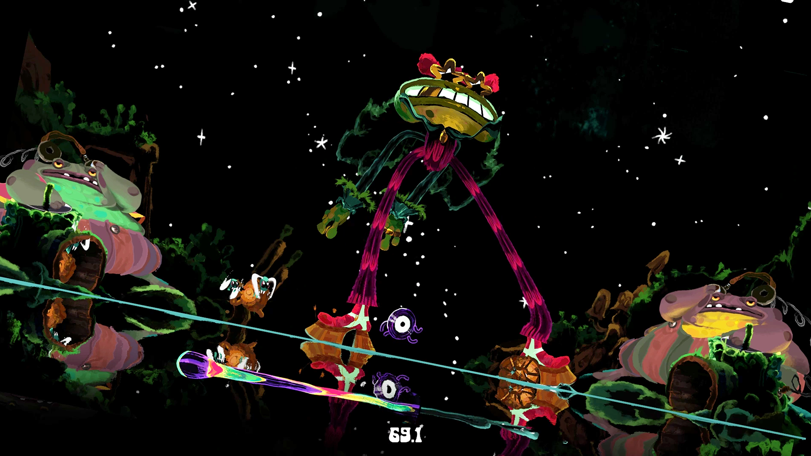

henry.schaefer@outlook.com
-
Worked with a small group of developers on “The Workspace of the Future” - an immersive collaboration and productivity application for XR, web, and desktop devices.
My focus at vSpatial included core UI/UX systems, XR input systems, and live service + store implementation
Check out their website here
Independent game studio founded by myself and artist Caleb Cutler. Participating in game jams and working on long term projects.
check out our itch.io page here and our twitter here

"psychedelic physics puzzler"

Currently unannounced (unless you're here) long term project. Satisfying physics. Procedural Generation. Unlock mysteries and form meanings. Syygyl.
play the syygyl beta here password "syygyl"
"buzz bonker"
Developed for the Summer 2019 Portland Indie Game Squad game jam "Three Button Three Color". A vertically oriented local competitive fighting game.
Check it out on itch.io
"gob stuffer"
Developed for the 2019 Global Game Jam. A scrolling arcade game where you control the ravenous Prince Patrick to satisfy his hunger.
Check it out on itch.io
"all that is good is nasty"
Developed for the Fall 2018 Portland Indie Game Squad game jam "Bootleg". Control the legs of a bootsy-d frog to stomp records before they reach the DJ booth.

Check it out on itch.io
Heavily inspired by the Final Fantasy card games Triple Triad and Tetra Master, Loamweaver emerged as experiment with grids, cards, and tactile feel.
Developed for the Global Game Jam 2020, Swarf Dwarf is a twin stick action game where you control two dwarfs bound by their passion for forging and magnetism.

Developed for a Portland Indie Game Squad game jam, God of Hand is an arcade scroller where you guide a growing communion of disciples around the pitfalls of sin. Inspired by the paintings of Hieronymus Bosch.

We participated in the Portland Indie Game Squad's "Death of a Game" postmortem event, where we discussed the story, and pitfalls of development
My first project with long time collaborator Caleb Cutler and my first project in Unity. A couch competitive burglary brawler developed for our class "Traditional Game Development" at the University of Utah.

see more here